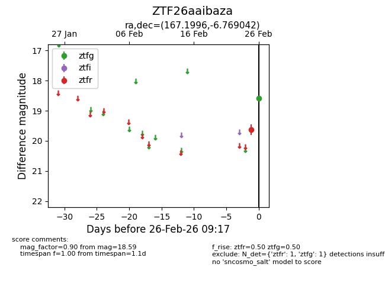
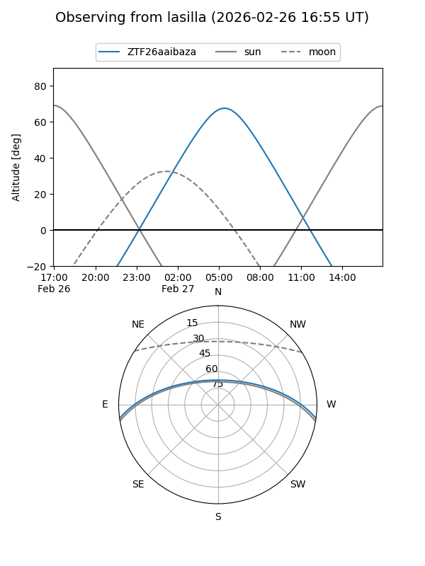
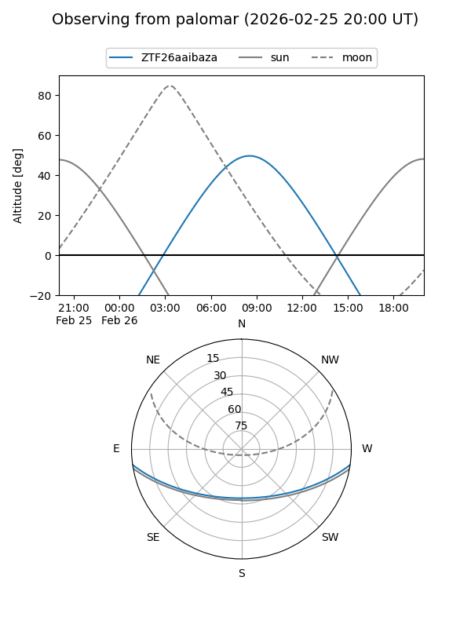

ZTF26aaibaza
Target ZTF26aaibaza at 2026-02-26 09:18
Aliases and brokers:
FINK: link
Lasair: link
ALeRCE: link
alt names
ZTF26aaibaza (ztf,fink_ztf)
Coordinates:
equatorial (ra, dec) = 167.1996,-6.76904
equatorial (HMS+DMS) = 11:08:47.90,-06:46:08.55
galactic (l, b) = (262.9641,+47.97735)
Flags:
Photometry:
last ztfg=18.59, ztfr=19.63
1 ztfg, 1 ztfr detections
Lightcurve

Visibility


Additional plots